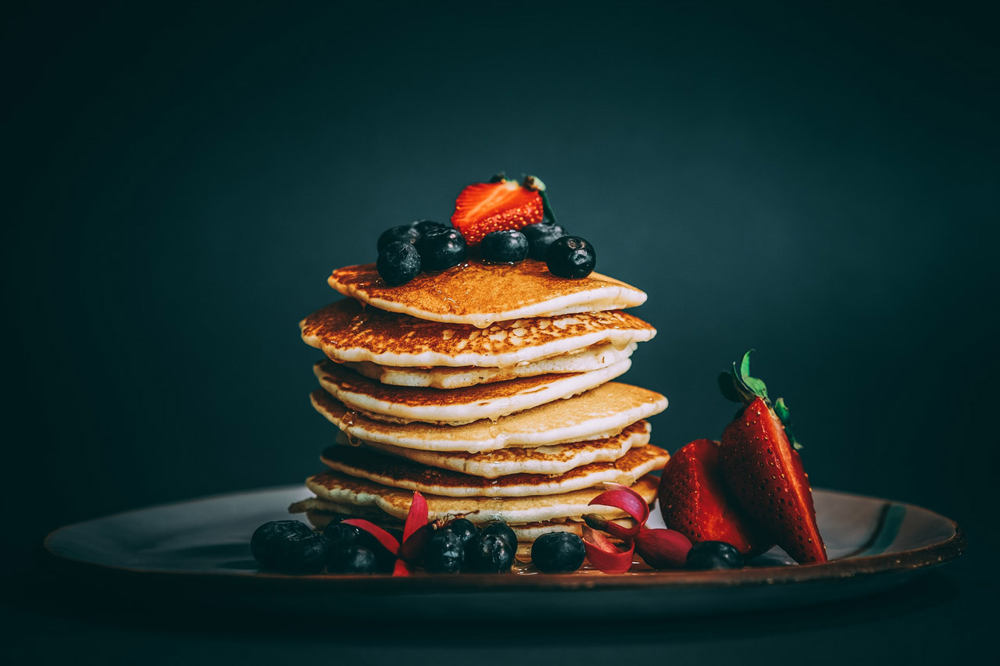

Pancakes

Description
The recipe of the classic american breakfast is here!
An easy recipe of our favourite pancakes drizzled with strawberry and blueberry
and of course maple syrup.
Ingredients:
- 1 cup all-purpose flour, (spooned and leveled)
- 2 tablespoons sugar
- 2 teaspoons baking powder
- 1/2 teaspoon salt
- 1 cup milk
- 2 tablespoons unsalted butter, melted
- 1 large egg
- 1 tablespoon vegetable oil
- strawberries, blueberries and maple syrup for toppings
Steps:
- Preheat oven to 200 degrees. Have a baking sheet or heatproof
platter ready to keep cooked pancakes warm in the oven.
- In a small bowl, whisk together flour, sugar, baking powder, and salt; set aside.
- In a medium bowl, whisk together milk, butter (or oil), and egg.
- Add dry ingredients to milk mixture; whisk until just moistened.
- Heat a large skillet (nonstick or cast-iron) or griddle over medium.
- Fold a sheet of paper towel in half, and moisten with oil;
carefully rub skillet with oiled paper towel.
- For each pancake, spoon 2 to 3 tablespoons of batter onto skillet,
using the back of the spoon to spread batter into a round
- Cook until surface of pancakes have some bubbles and a few have burst, 1 to 2 minutes.
- Flip carefully with a thin spatula, and cook until browned on the underside, 1 to 2 minutes more
- Serve warm, with desired toppings.
Enjoy!